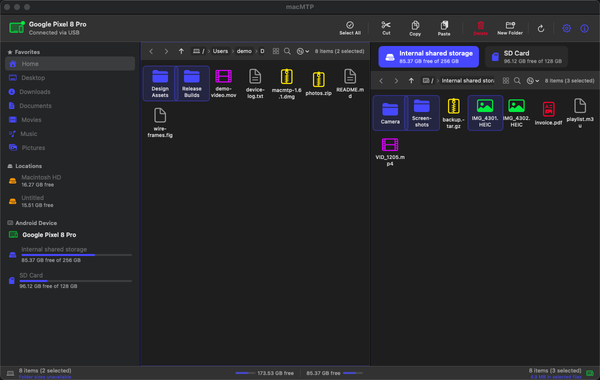
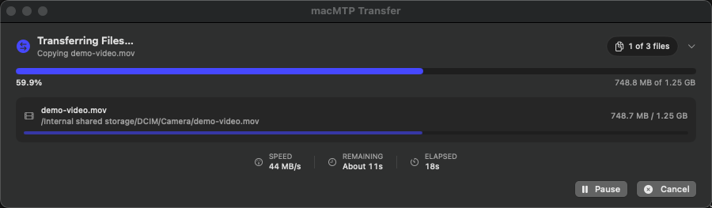
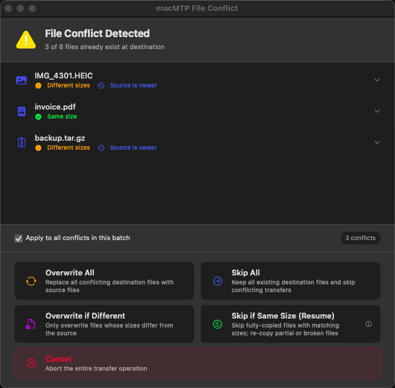
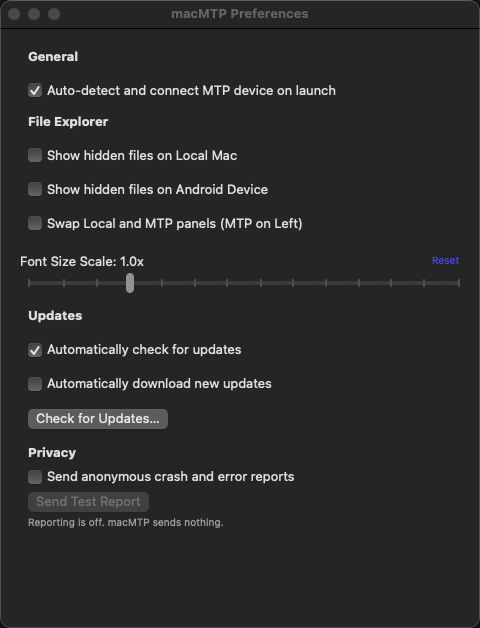
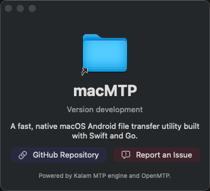

Native macOS Android file transfer.
macMTP is a focused SwiftUI utility for moving files between a Mac and Android devices over USB MTP.
Requires macOS 14.0 or later, a USB cable, and an Android device set to File Transfer / MTP mode.

Download
Manual choices
System requirement
macOS 14.0 Sonoma or later on Apple Silicon or Intel. Use the universal build if you are unsure which Mac you have.
What it does today
Dual-pane browsing
Browse local files beside Android MTP storage, with sidebar locations, mounted volumes, internal storage, and SD card selection.
Transfers
Upload, download, copy, cut, paste, drag and drop, cancel transfers, and see per-file plus overall progress.
Sorting and grouping
Sort by name, size, type, or date. Group icon views by kind, extension, size range, or modified date.
Conflict handling
Overwrite, skip, overwrite if different, skip same-size files, or cancel when destination files already exist.
Current-directory sizes
Status totals count direct files in the open folder. Folder sizes are not recursively scanned on MTP.
Opt-in reporting
Crash and error reporting is opt-in. Reports redact paths and do not attach Android device identifiers to MTP directory errors.
Screenshots




Known limits
- MTP-to-MTP copy or move is not currently supported by the bridge.
- Conflict handling is size-based; it is not byte-range resume inside partial files.
- Dragging MTP files directly to Finder is not implemented yet; use the local pane as the download target.
- The app is community-maintained open source software.
- If a feature in the README is incomplete or broken, open an issue or PR.
- Universal builds are available for Intel and Apple Silicon Macs.
- Built with Swift, SwiftUI, Go, libusb, and Sentry Cocoa.
- The Go MTP engine is compiled as a static C archive and linked into the Swift executable.
- Release artifacts are published on GitHub Releases.